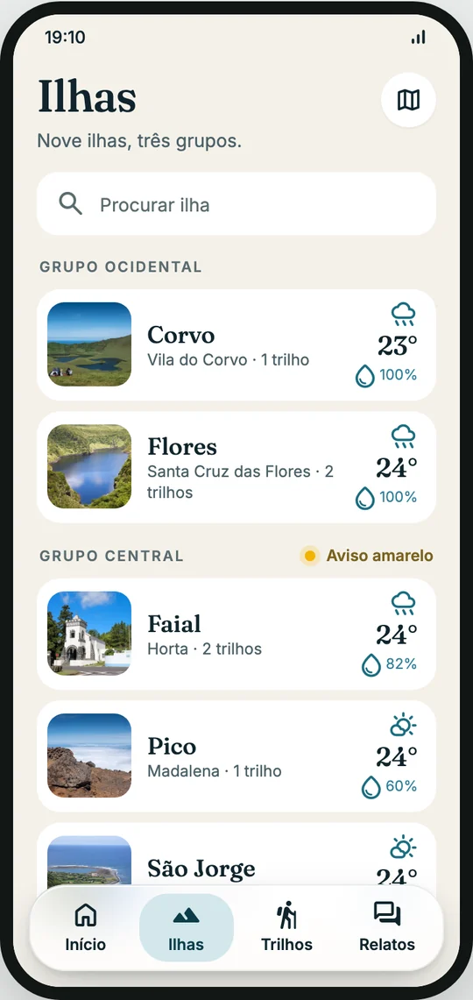
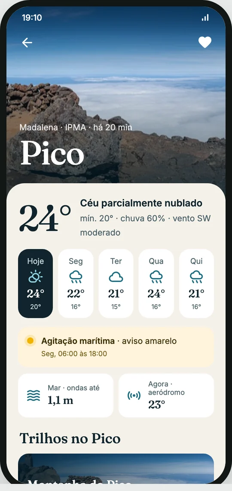
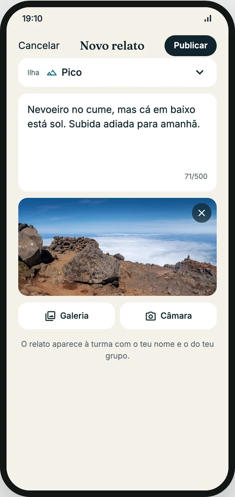

Aula 16 · Semana 8 · Segunda, 26 de outubro de 2026 · 16:00 às 18:00
Teoria: opções de persistência em mobile: chave-valor, SQLite, NoSQL local, ficheiros e armazenamento seguro; como os packages falam com cada plataforma; critérios de escolha. No repositório da aula: o login em camadas, a sessão no armazenamento seguro e preferências com shared_preferences. Arranque do projeto Tempo Açores.
flutter_secure_storage faz em cada plataforma.shared_preferences.| Tipo de dado | Exemplo no Tempo Açores | Ferramenta |
|---|---|---|
| Preferências chave-valor | Unidade °C/°F, tema, última localidade | shared_preferences (SharedPreferences no Android, NSUserDefaults no iOS) |
| Dados estruturados com consultas | Cache de previsões e avisos, histórico | SQLite: sqflite (SQL à mão) ou drift (tipado, reativo) |
| NoSQL local (documentos) | Rascunho de um relato, últimas pesquisas | hive_ce ou sembast: guardam mapas e objetos sem tabelas nem SQL. O hive e o isar originais foram abandonados pelo autor; usa-se o fork da comunidade. |
| Ficheiros | Imagens, exportações, logs | path_provider + dart:io |
| Segredos | Refresh token (o access token fica só em memória) | flutter_secure_storage (Keychain no iOS, Keystore no Android) |
Para os testes: preferências para valores pequenos, SQLite para dados que se consultam, secure storage para segredos.
shared_preferences) guarda coisas pequenas e pouco importantes, à mão. O arquivo com pastas (SQLite) guarda muitos registos que se procuram por nome ou data. O cofre (Keychain e Keystore) guarda o token. Deixar o token na gaveta é deixar a chave de casa debaixo do tapete./data/data/<package>/; iOS: Documents/, Library/, tmp/.path_provider abstrai isto: getApplicationDocumentsDirectory() persiste e vai para o backup; getApplicationSupportDirectory() persiste sem aparecer ao utilizador; getTemporaryDirectory() pode ser limpa pelo sistema.Documents/; o Android Auto Backup copia até 25 MB. Cache e tokens devem ficar de fora (android:fullBackupContent, isExcludedFromBackup).Para os testes: Documents persiste e vai no backup; tmp pode desaparecer a qualquer momento.
shared_preferences é um ficheiro XML (Android) ou plist (iOS) em texto. Num telemóvel com root lê-se com cat; nos backups vai em claro.flutter_secure_storage cifra os valores com AES e guarda a chave AES no Keystore.Para os testes: um token nunca vai para shared_preferences; vai para Keychain ou Keystore via flutter_secure_storage.
shared_preferences e onde fica o flutter_secure_storage.pubspec.yaml só tem a API em Dart. Puxa sozinho um package por plataforma (shared_preferences_android, shared_preferences_foundation, shared_preferences_web...).Future, e por isso o main chama WidgetsFlutterBinding.ensureInitialized() antes do primeiro plugin.write faz coisas muito diferentes: no Android cifra com uma chave guardada no Keystore; no iOS entrega ao Keychain; na web cifra com WebCrypto e guarda no browser, o que é bem menos seguro.Para os testes: o package dá uma só API; quem guarda de facto é o sistema de cada plataforma, através do canal de plataforma.
| Estratégia | Fluxo | Quando |
|---|---|---|
| Cache-first | Mostra a cache, pede à rede em fundo, atualiza | Previsões, listas: rapidez percebida |
| Network-first | Pede à rede; se falhar, mostra a cache | Dados críticos que mudam: saldo, stock |
| Cache-only / Network-only | Nunca vai à rede / nunca guarda | Mapas descarregados / pagamentos |
obtidoEm e compara: previsão válida 30 min, avisos 5 min, localidades 24 h.schemaVersion + MigrationStrategy no drift; nunca apagar dados do utilizador sem aviso.Para os testes: cache-first mostra rápido e atualiza depois; network-first garante dados frescos; a invalidação por tempo decide quando a cache expira.
obtidoEm), e entretanto vai-se às compras (o pedido à rede em fundo); quando se volta, substitui-se o que lá estava. Sem rede, come-se o que há, e o rótulo diz de quando é. A validade no rótulo é a invalidação por tempo: dentro do prazo não se vai às compras.login(email, password). Não espera pela resposta: desenha o que o notifier disser.isLoading e pede ao AuthRepository.ApiClient.Session.SessionStore, que o entrega ao Keychain ou ao Keystore.notifyListeners. O main vê a sessão e troca o login pelas ilhas.SessionNotifier passava a ser um Cubit<SessionState>: os mesmos passos, com emit(...) em vez de notifyListeners() e um estado imutável em vez de campos soltos. Repository e store ficam iguais. É isso que as camadas compram: muda-se a gestão de estado sem tocar nos dados.
load() ao abrir e desenha o que o notifier tiver: spinner, erro com Tentar outra vez, ou a lista.models/: a classe com fromJson, só com o que a app usa.data/: o repository que pede à API pelo ApiClient e devolve modelos.state/: o notifier com carregamento, erro e dados.screens/: o ecrã que desenha o estado e chama o notifier.main.dart: cria as peças e liga-as com o Provider.
toggle('pico') e mais nada.PUT (ou DELETE) com o token do utilizador.
image_picker, outro plugin com uma implementação por plataforma. O ecrã guarda só o ficheiro escolhido.publish(...). Enquanto isSending, o botão fica desligado.ApiClient, o SessionStore e os notifiers do repositório da aula podem ir para o projeto tal como estão. Os ecrãs não: esses seguem o Figma.git clone https://github.com/Tiago-Rocha/pdm-aula-16.git
cd pdm-aula-16
flutter pub get
flutter run -d chrome --dart-define=CLIENT_ID=pdm-ab12cd \
--dart-define=CLIENT_SECRET=your-secretmain, com tudo: a app das ilhas em camadas, agora com contas, sessão guardada e preferências. Não há exercícios: percorremos o código juntos.lib/: models/user.dart, data/auth_repository.dart, data/session_store.dart, state/session_notifier.dart, state/settings.dart e screens/login_screen.dart.pdm-miniprojeto). As contas que criares pertencem a essa app.AuthRepository: o pedido de loginclass AuthRepository {
AuthRepository(this._api); // injected, not created here
final ApiClient _api;
Future<Session> login(String email, String password) async {
final json = await _api.post('/v1/auth/login', {
'clientId': _api.clientId,
'clientSecret': _api.clientSecret,
'email': email,
'password': password,
});
return Session.fromJson(json as Map<String, dynamic>);
}clientId e clientSecret; a pessoa com email e password. O register é igual, com mais o name.accessToken (15 min), o refreshToken (30 dias) e o user. Session.fromJson lê os três, em lib/models/user.dart.SessionNotifier: quem está com sessão Future<void> login(String email, String password) =>
_start(() => _auth.login(email, password));
Future<void> register(String name, String email, String password) =>
_start(() => _auth.register(name, email, password));
Future<void> _start(Future<Session> Function() request) async {
isLoading = true;
error = null;
notifyListeners();
try {
final s = await request();
await _store.save(s.refreshToken); // before the UI knows
session = s;
} on ApiException catch (e) {
error = e.message; // the API already writes it in Portuguese
} catch (_) {
error = 'Sem ligação. Tenta de novo.';
} finally {
isLoading = false;
notifyListeners();
}
}
}_start: liga o spinner, faz o pedido, guarda a sessão ou o erro, desliga o spinner.mainvoid _submit() {
if (!_form.currentState!.validate()) return;
final session = context.read<SessionNotifier>();
final email = _email.text.trim();
context.read<Settings>().saveLastEmail(email);
if (_creating) {
session.register(_name.text.trim(), email, _password.text);
} else {
session.login(email, _password.text);
}
}class _Home extends StatelessWidget {
const _Home();
@override
Widget build(BuildContext context) {
final session = context.watch<SessionNotifier>();
if (session.isRestoring) {
return const Scaffold(body: Center(child: CircularProgressIndicator()));
}
return session.isLoggedIn ? const IslandsScreen() : const LoginScreen();
}
}_Home escolhe o ecrã pela sessão: spinner enquanto restaura, login sem sessão, ilhas com ela.SessionStore: o refresh token no cofreimport 'package:flutter_secure_storage/flutter_secure_storage.dart';
/// The refresh token, in the Keychain (iOS) or the Keystore (Android).
/// Never in shared_preferences: it is a password that lasts 30 days.
class SessionStore {
const SessionStore([this._storage = const FlutterSecureStorage()]);
final FlutterSecureStorage _storage;
static const _key = 'refreshToken';
Future<String?> read() => _storage.read(key: _key);
Future<void> save(String refreshToken) =>
_storage.write(key: _key, value: refreshToken);
Future<void> clear() => _storage.delete(key: _key);
}restore() Future<void> restore() async {
try {
final saved = await _store.read();
if (saved != null) session = await _auth.refresh(saved);
} on ApiException {
await _store.clear(); // expired, logged out or account deleted
} catch (_) {
// offline: show the login, keep the token for the next start
} finally {
isRestoring = false;
notifyListeners();
}
}POST /v1/auth/refresh. Se a API recusar (expirou, logout, conta apagada), apaga-o.isRestoring, o _Home mostra um spinner em vez do login.Settings: o último email e o temaclass Settings extends ChangeNotifier {
Settings(this._prefs);
final SharedPreferences _prefs;
static Future<Settings> load() async =>
Settings(await SharedPreferences.getInstance());
String get lastEmail => _prefs.getString('lastEmail') ?? '';
// Enums are saved by name, never by index.
ThemeMode get theme =>
ThemeMode.values.byName(_prefs.getString('theme') ?? 'system');
Future<void> saveLastEmail(String email) =>
_prefs.setString('lastEmail', email);
Future<void> saveTheme(ThemeMode mode) async {
await _prefs.setString('theme', mode.name);
notifyListeners(); // MaterialApp rebuilds with the new theme
}
}getInstance(), escrita assíncrona.name e lêem-se com values.byName. Pelo índice, reordenar o enum estragava o que estava guardado.runAppvoid main() async {
WidgetsFlutterBinding.ensureInitialized(); // before any plugin
final settings = await Settings.load();
// ...
}ensureInitialized() liga o motor do Flutter ao canal de plataforma. Sem ele, o primeiro plugin falha no main.runApp porque o tema tem de estar certo no primeiro frame.q e corre outra vez: um spinner curto e as ilhas. A sessão veio do cofre. O hot restart (R) não prova isto.O enunciado completo está em Projeto e a API em API. O essencial:
clientId e clientSecret do grupo). Cada pessoa tem a sua conta dentro dessa app: registo, login, sessão, favoritos e relatos.main.flutter run -d chrome --dart-define=CLIENT_ID=pdm-group \
--dart-define=CLIENT_SECRET=group-secretAs contas criadas com as tuas credenciais não existem na app do grupo. No projeto, cada membro cria a sua conta outra vez, já na app do grupo.
Amanhã: o access token nos pedidos (Authorization: Bearer), a renovação automática quando a API responde 401 e os favoritos guardados na conta.